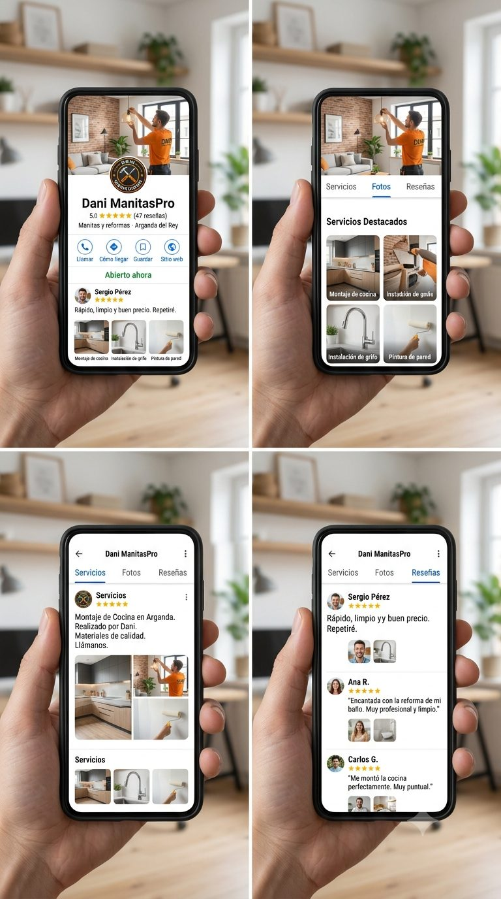

Lo más difícil ya lo tienes: eres muy buen profesional y tus clientes lo saben. Lo único que te falta es posicionamiento — que te encuentre más gente de la que ya te conoce. Eso es lo que arregla este plan.
Qué es esto: 8 cambios para conseguir más clientes, ordenados por lo que cuestan frente a lo que dan. Los 4 primeros cuestan 0 € y un fin de semana. Antes de tocar nada hay una decisión que solo puedes tomar tú: el nombre.
Hoy usas tres nombres a la vez: Dani Manitas & Reformas en Google, ManitasPro en Instagram y folletos, y dos logos distintos entre los propios folletos. Quien te ve en un sitio no te reconoce en otro, y Google reparte tu reputación entre varios nombres en vez de acumularla en uno. Todo lo demás depende de cerrar esto primero.
Dani ManitasPro
Conserva tu marca actual y añade lo que te diferencia: tú. En este negocio el cliente contrata a la persona, no al logo — un nombre propio genera confianza y te distingue de la docena de "manitas" genéricos que compiten en tu zona.
ManitasPro (a secas)
Riesgo concreto: es genérico, manitaspro.com ya es de otro negocio de manitas y tu Instagram necesita guion bajo (manitaspro_) porque el nombre estaba cogido. Competirías siempre por un nombre que no será tuyo en Google.
Decidas lo que decidas: un solo nombre, un solo logo (el hexágono negro/amarillo, que ya coincide con tu IG), un solo teléfono y un solo email, idénticos en todas partes.
Dominios, comprobado el 8 de julio de 2026: danimanitaspro.com y manitasprodani.com están libres (verificado en el registro oficial); danimanitaspro.es y manitasprodani.es aparecen también sin registrar. La disponibilidad cambia sin aviso: en cuanto elijas nombre, registra el dominio ese mismo día (10-15 €/año).
| # | Cambio | Por qué | Coste | Beneficio |
|---|---|---|---|---|
| 1 | Unificar la identidad con el nombre elegido en el punto 0: Google, Instagram, folletos, WhatsApp | Google premia la coherencia nombre-dirección-teléfono para posicionar negocios locales. Hoy tus tres canales parecen tres negocios distintos. | 0 € · 2-3 h | Alto |
| 2 | Completar la ficha de Google: categorías ("Manitas", "Empresa de reformas"), descripción con servicios y zonas, horario, fotos de trabajos reales, botón de WhatsApp | Es donde busca un vecino de Arganda con una avería. Tu ficha aparece pero está a medio montar: sin web, sin reseñas visibles, categoría genérica. Es tu escaparate principal. | 0 € · 2-3 h | Muy alto |
| 3 | Sistema de reseñas: enlace directo o QR impreso, y pedirla a cada cliente al cobrar | Entre dos manitas iguales, gana el que tiene 20 reseñas frente al que tiene 0. Es acumulativo: cada trabajo alimenta el siguiente. La primera te la dejo yo. | 0 € · constancia | Muy alto |
| 4 | WhatsApp Business (gratuito): perfil con servicios, respuestas rápidas, mensaje de ausencia | Tu cliente decide por WhatsApp. Responder rápido y con aspecto profesional cierra trabajos que hoy se enfrían. Migrar desde tu WhatsApp normal cuesta cero. | 0 € · 1 h | Alto |
| 5 | Alta en 2-3 plataformas: Cronoshare, habitissimo, Wallapop Servicios — con el perfil ya unificado | Demanda inmediata sin esperar a que Google te posicione. Contras: comisiones y competencia por precio. Útil para llenar huecos de agenda y acumular las primeras reseñas, no como canal principal. | Bajo · comisiones | Medio-alto |
| 6 | Web de una página con dominio propio: servicios, zona, fotos, botón de WhatsApp | Da legitimidad, rellena el campo "sitio web" de tu ficha de Google (hoy vacío) y captura búsquedas tipo "manitas Arganda". Se hace una vez, sin mantenimiento. El primer boceto ya está hecho — optimizado para SEO, responsive (diseñado primero para móvil, donde te buscará casi todo el mundo) y con botón de contacto claro y sin fricciones. Solo faltaría elegir a tu gusto imágenes, logo, textos y estructura. Ver el boceto de tu web |
10-80 €/año | Medio |
| A medio y largo plazo — cuando lo anterior esté rodado | ||||
| 7 | Instagram como escaparate pasivo: antes/después de trabajos cuando puedas, sin calendario | En servicios locales, IG casi no capta clientes nuevos; sirve para que quien ya te ha encontrado compruebe que trabajas bien. No merece inversión activa de tiempo. Recomendación: solicita la subvención del Kit Digital para redes sociales — incluye un año de gestión de RRSS gratis, aplicando todo lo que definamos ahora (nombre, logo, tono). Te ayudo a solicitarla y el servicio te lo da la empresa que tú prefieras. | Tiempo recurrente | Bajo-medio |
| 8 | Publicidad de pago: Google Ads local o buzoneo con el folleto ya unificado | Solo si tras 3-6 meses con todo lo anterior te falta agenda. Pagar por clics con una ficha sin reseñas es tirar el dinero: primero el embudo, luego el tráfico. | € recurrente | Medio* |
* Condicionado a tener antes los puntos 1-3 hechos.
Esto no es una promesa abstracta: es una simulación de cómo se vería tu perfil de Google con los puntos 1-3 hechos — nombre unificado, ficha completa con servicios y fotos de trabajos reales, y reseñas acumuladas. Es lo que vería un vecino de Arganda al buscar un manitas.

Dónde estás hoy: captas por boca a boca. Tu ficha de Google aparece si alguien busca tu nombre exacto, pero eres casi invisible en la búsqueda que trae clientes nuevos: "manitas Arganda del Rey". Ahí ganan plataformas y empresas con decenas de reseñas.
Qué cambia con los puntos 1-4 (0 €, un fin de semana): el problema no es que no te encuentren, es que cuando te encuentran no hay nada que genere confianza ni facilite el contacto. Con la ficha completa y 15-20 reseñas acumuladas en unos meses, es realista aspirar al mapa de los 3 primeros resultados en Arganda, que se lleva la mayoría de los clics. Eso puede suponer pasar de contactos esporádicos a un flujo estable de consultas semanales por Google. Las cifras exactas dependen de tu zona y competencia — no te prometo números que nadie puede prometer.
El efecto que importa de verdad: con demanda estable llenas la agenda con antelación, puedes cobrar tarifas justas sin regatear y das a cada trabajo — de la pequeña reparación a la reforma integral — el tiempo que merece. Trabajando solo, tu agenda tiene techo: el objetivo es un flujo constante que te dé estabilidad, no depender de que suene el teléfono.
Condiciones para que funcione, sin adornos:
Tres bloques. El primero ya está hecho (es este documento) y el segundo lo ejecuto yo una vez: los dos te los regalo si contratas el mantenimiento. Solo pagas el tercero, y puedes cancelarlo cuando quieras.
Que quede claro: esto no te obliga a nada. La auditoría y el plan ya están hechos y son tuyos — toda la información está en este documento, ordenada y priorizada para que puedas implementarla tú mismo. No tienes por qué gastarte ni un euro si no quieres.
El valor de la propuesta está en otra cosa: en que lo implemente alguien que lo hace con detalle y en profundidad porque es su profesión, y en el tiempo que te ahorras peleándote con algo en lo que no tienes práctica. Tú lo entiendes mejor que nadie: montar un mueble o enyesar una pared también puede hacerlo cualquiera con tiempo y tutoriales — pero nunca queda igual de bien, y el esfuerzo que le dedica es sobrehumano. Esto es exactamente lo mismo, con los papeles cambiados.
Referencia de mercado 2026: una auditoría inicial de agencia cuesta 500-2.000 €, una landing 300-600 € y la gestión mensual de ficha de Google 75-180 €/mes. Esta propuesta está en el suelo de cada rango.